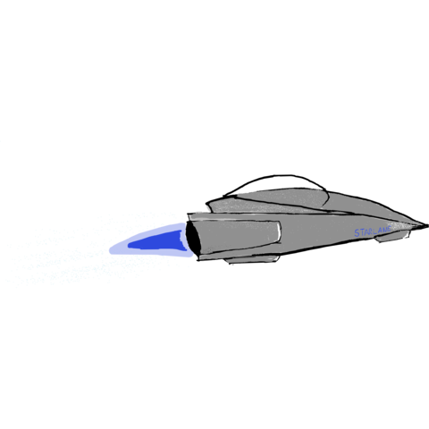

Starlane
Play ADRIFT 5 interactive fiction, right in your browser.
Starlane is a C++ reimplementation of the
ADRIFT 5
interactive fiction engine. It loads and plays ADRIFT 5 .taf game
files, aiming to reproduce the original runner's behavior as closely as possible.
This build runs entirely client-side via WebAssembly — nothing you open or play
is uploaded anywhere.
The app is a roughly 15 MB download (it bundles a full Qt
UI toolkit compiled to WebAssembly). Give it a moment to load, especially on a
slow connection.